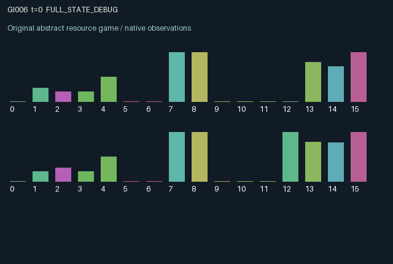

GI006 / LEGACY_ARRAY
Mobile pollution with defensive shutters
2 agents5 actions16 observation columns32 original horizonRuntime: PASS
Release verification episode
Untrained uniform legal actions. Actual JAX state sampled along the full original episode; full-state debug camera. No human performance or learning claim.

Run this game
crucibles play --game 6
Start Python locally, then open the address printed by the terminal. Installation, multiplayer, takeover and keyboard controls →
Objective, rewards & ending
Exact task contract
{
"objective": "Accumulate original per-agent rewards under the interaction rules in mechanism.md.",
"natural_termination": "No early terminal; original t >= 32 horizon.",
"exact_transition_and_reward_source": "def raw_step(self, key, state, actions):\n gate = jnp.where(actions == 3, 0.0, jnp.where(actions == 4, 1.0, state['gate']))\n available = jnp.minimum(1.0, state['stock'] + 0.08)\n effort = jnp.minimum(available, 0.2)\n upkeep = effort * (actions == 2)\n cleanup = effort * (actions == 1)\n filtration = jnp.clip(0.94 * state['filter'] + upkeep, 0.0, 1.0)\n output = (actions == 0) * (1.0 - state['pollution']) * (0.4 + 0.6 * gate)\n emissions = 0.24 * output * (1.0 - filtration)\n export = 0.3 * gate * state['pollution']\n pollution = jnp.clip(0.9 * state['pollution'] - export + state['plume'] * gate + emissions - cleanup, 0.0, 1.0)\n plume = export[::-1]\n stock = jnp.clip(available - upkeep - cleanup + 0.12 * output, 0.0, 1.0)\n rewards = (0.45 * output - 0.5 * pollution - 0.1 * (upkeep + cleanup)).astype(jnp.float32)\n next_state = {\n 't': state['t'] + jnp.array(1, dtype=jnp.int32),\n 'pollution': pollution, 'filter': filtration, 'stock': stock,\n 'plume': plume, 'gate': gate, 'output': output, 'cleanup': cleanup,\n }\n done_all = next_state['t'] >= 32\n dones = jnp.full((2,), done_all, dtype=jnp.bool_)\n return self.observe(next_state), next_state, rewards, dones, {\n 'done_all': done_all, 'legal_mask': self.legal_actions(next_state)}"
}Declared per-step reward bounds: -1.0 to 1.0. Observability: source_defined.
Rules
Original mechanism document (historical status wording retained)
# Mobile pollution with defensive shutters Parentless proposal; related to generic transboundary pollution and abatement games. No claim of novelty or nonisomorphism is made. Actions 0 produce, 1 clean local pollution, 2 invest in a decaying filter, 3 close a persistent shutter, 4 open it. Production earns immediate output but creates pollution. Filters reduce new emissions; cleanup removes existing burden. Open shutters increase production and export existing pollution into a delayed plume directed at the other agent. The receiving shutter determines whether the arriving plume is admitted; rejected material is lost. Closing protects against incoming pollution but reduces output and prevents exporting one's own burden. Pollution, delayed plumes, shutters and output are public; partner filter and stock are private. Both roles alter their own persistent state and the other's future burden. A stock budget funds cleaning and filtration, replenished slowly and by production. Reward is 0.45 * output - 0.5 * next pollution - 0.1 * total abatement expenditure. Output and pollution lie in [0,1], and mutually exclusive abatement costs at most 0.2, giving bounds [-0.52,0.45]. No validation or learning claim.
Commands
0Produce
1Clean pollution
2Maintain filter
3Close shutter
4Open shutter
Roles & abilities
agent_0 Original legacy agent; see mechanism and source
agent_1 Original legacy agent; see mechanism and source
Observation permissions
Training receives only the original observation rows. Role cameras use declared visibility; debug cameras are explicitly marked. Local benchmark records log debug exposure and role takeover history.
Exact observation layout
[
{
"slice": [
0,
16
],
"visibility": "exact original observe() below",
"source_code": "def observe(self, state):\n obs = jnp.zeros((2, 16), dtype=jnp.float32)\n obs = obs.at[:, 0].set(state['t'] / 32.0)\n obs = obs.at[:, 1].set(state['pollution'])\n obs = obs.at[:, 2].set(state['pollution'][::-1])\n obs = obs.at[:, 3].set(state['filter'])\n obs = obs.at[:, 4].set(state['stock'])\n obs = obs.at[:, 5].set(state['plume'])\n obs = obs.at[:, 6].set(state['plume'][::-1])\n obs = obs.at[:, 7].set(state['gate'])\n obs = obs.at[:, 8].set(state['gate'][::-1])\n obs = obs.at[:, 9].set(state['output'])\n obs = obs.at[:, 10].set(state['output'][::-1])\n obs = obs.at[:, 11].set(state['cleanup'])\n obs = obs.at[:, 12].set(jnp.arange(2, dtype=jnp.float32))\n obs = obs.at[:, 13].set(1.0 - state['filter'])\n obs = obs.at[:, 14].set(1.0 - state['pollution'])\n obs = obs.at[:, 15].set(1.0)\n return obs"
}
]Entity visibility & attributes
[]
Actual verification & provenance
Per-game execution receipt
{
"game": "gi006",
"status": "PASS",
"verification_revision": 2,
"source_sha256": "c51c8c03b2e4f162675456803662baf5fe86df89c897dbd22b5e913469def487",
"seed": 20261101,
"runtime": {
"jax": "0.4.38",
"numpy": "1.26.4",
"devices": [
"TFRT_CPU_0"
]
},
"dimensions": {
"num_agents": 2,
"observation_size": 16,
"num_actions": 5,
"max_steps": 32
},
"checks": {
"eager_reset": {
"status": "PASS",
"seconds": 0.40114665031433105
},
"observation_spaces_legal_masks": {
"status": "PASS",
"seconds": 0.12224245071411133
},
"eager_step": {
"status": "PASS",
"seconds": 0.35356712341308594
},
"jit_reset": {
"status": "PASS",
"seconds": 0.13701605796813965
},
"jit_step": {
"status": "PASS",
"seconds": 0.17803287506103516
},
"eager_jit_integer_parity_float_measurement": {
"status": "PASS",
"seconds": 0.0011022090911865234
},
"jit_vmap_reset": {
"status": "PASS",
"seconds": 0.18477845191955566
},
"jit_vmap_step": {
"status": "PASS",
"seconds": 0.19407916069030762
},
"outer_autoreset_api": {
"status": "PASS",
"seconds": 0.42361998558044434
},
"full_original_horizon_episode_and_render": {
"status": "PASS",
"seconds": 0.9875526428222656
}
},
"human_scores": null,
"browser_controls": "PENDING",
"failures": [],
"elapsed_seconds": 3.4851930141448975,
"float_parity_max_abs": 1.4901161193847656e-08,
"numerical_parity": "UNDETERMINED_NONZERO_FLOAT_DIFFERENCE",
"raw_terminal_absorbing": "NOT_PART_OF_ORIGINAL_LEGACY_CONTRACT",
"terminal_outer_reset": "PASS",
"episode_steps": 32,
"scripted_random_returns": [
0.7722067483700812,
0.1301267989911139
],
"terminal": true,
"demo_information": "FULL_STATE_DEBUG",
"demo_frames": 33,
"render_roles_checked": 2
}Chromium control verification
{
"game": "gi006",
"status": "PASS",
"human_scores": null,
"engineering": true,
"checks": [
"catalog_selected_and_real_native_reset",
"dom_queue_and_native_step",
"second_participant_ownership_and_native_joint_step",
"all_roles_individually_controllable_no_role_cap",
"explicit_debug_camera",
"release_to_pure_ai_without_reset",
"close_session_preserves_log"
],
"ui_sha256": "96243f9de144b80b5e20a114330e2206bdcd58d3efc9c6f13bbc08b95cacc14d",
"keyboard": "NO_LEGAL_CARDINAL_COMMAND_FOR_ROLE0_AT_RESET",
"seconds": 3.814802646636963
}Original identity and file hashes
{
"id": 6,
"key": "gi006",
"title": "Mobile pollution with defensive shutters",
"summary": "",
"tags": [],
"family": "legacy_array",
"dimensions": {
"num_agents": 2,
"observation_size": 16,
"num_actions": 5,
"max_steps": 32
},
"source_sha256": "c51c8c03b2e4f162675456803662baf5fe86df89c897dbd22b5e913469def487",
"manifest_sha256": "4c052f5521da5b11967993c6fb76a55c52ee3e87ee704463dcaa4f749f41f809",
"files": [
{
"file": "candidate.py",
"sha256": "c51c8c03b2e4f162675456803662baf5fe86df89c897dbd22b5e913469def487",
"bytes": 3162,
"origin": "work/exp_2/astra_generation/discovery_v2/initial/candidate_00006/attempt_00/candidate.py"
},
{
"file": "mechanism.md",
"sha256": "5c8c1f47dde37cdc7eb4ced904a258312265d4e0f876d807992f3c6d2866782d",
"bytes": 1217,
"origin": "work/exp_2/astra_generation/discovery_v2/initial/candidate_00006/attempt_00/mechanism.md"
}
],
"original_status": "LEGACY_SOURCE",
"original_saved_replay": false,
"release_validation": "PASS",
"human_scores": null,
"browser_validation": "PASS"
}